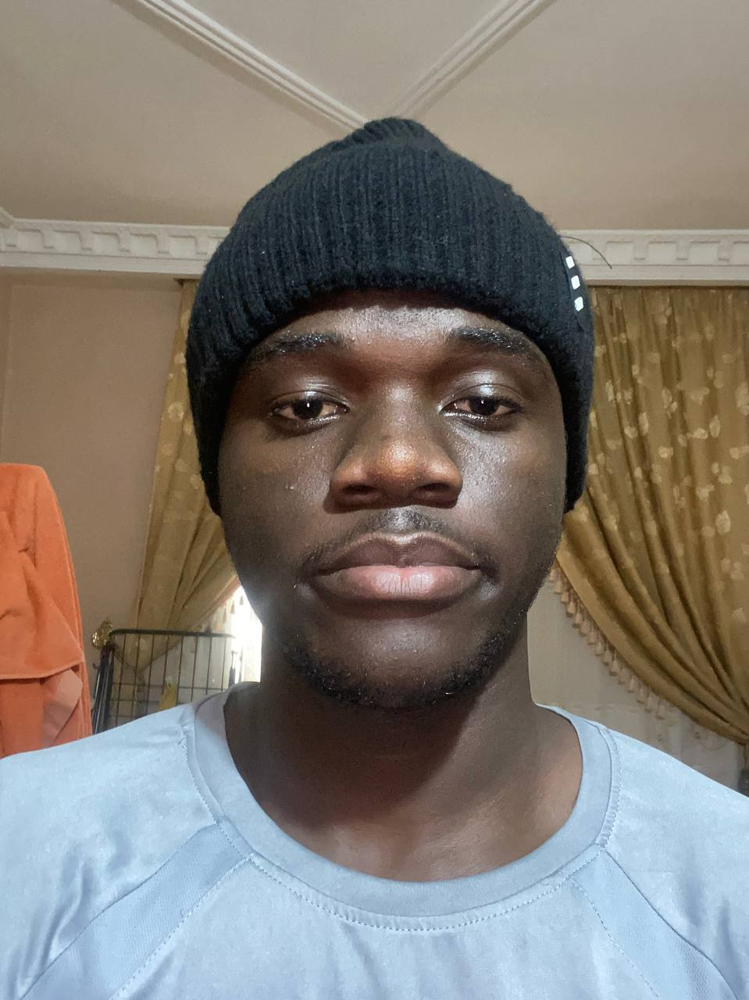

My name is Jerdaël, and I am from the Republic of the Congo. I enjoy learning about technology, programming, and web development. My goal is to become a software developer and create technology that improves people's lives.